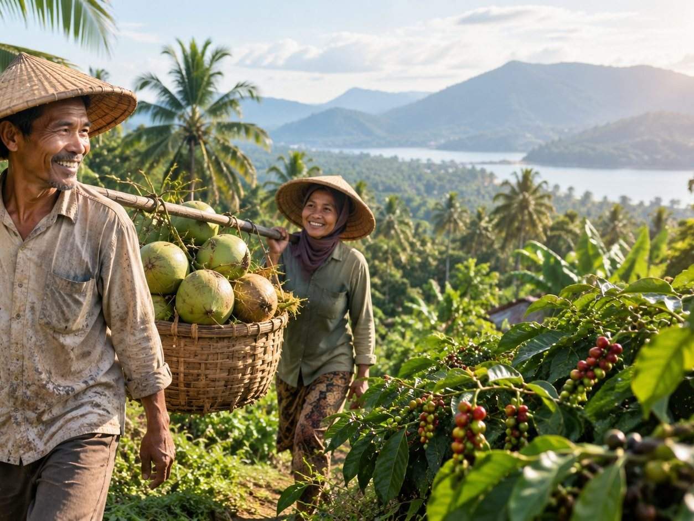
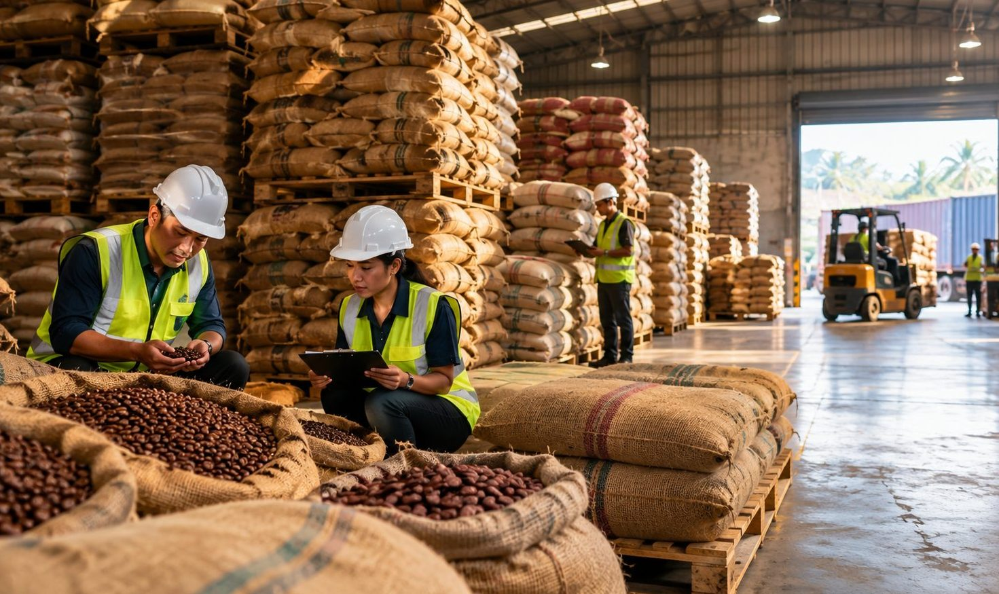

AGRI—01Pertanian & Perkebunan
Kopi · Kakao · Kelapa · Rempah · Lada · Vanili · Buah-buahan
7+
Layanan Terintegrasi
4
Kategori Komoditas
1 Pintu
Ekspor Terpadu
Global
Jangkauan Pasar
TENTANG KAMI
PT Pas Asa Sejahtera adalah kendaraan bisnis yang dirancang untuk mengorganisir pasokan Indonesia yang terfragmentasi agar siap bersaing di pasar global. Kami bukan sekadar perusahaan dagang konvensional — kami mengatur pasokan, kualitas, kepatuhan, logistik, pendanaan, dan akses pasar dalam satu ekosistem terpadu.
Visi kami menjadi platform agregasi ekspor terkemuka yang memungkinkan produk lokal tumbuh secara berkelanjutan di pasar dunia.

LAYANAN KAMI
Kami mengoordinasikan seluruh siklus transaksi — dari pengumpulan pasokan hingga pengiriman ke tangan pembeli di seluruh dunia.
RUTE—01
Mengonsolidasikan produk dari petani, koperasi, UMKM, dan pengolah menjadi volume ekspor yang layak dan konsisten.
RUTE—02
Menetapkan spesifikasi, penyortiran, pengemasan, dan pelacakan yang konsisten sesuai standar internasional.
RUTE—03
Mengkoordinasikan pengolahan produk untuk meningkatkan nilai dan daya saing di pasar global.
RUTE—04
Dokumentasi, sertifikasi, dan pemenuhan persyaratan pasar tujuan secara lengkap dan akurat.
RUTE—05
Membangun dan menjaga hubungan dengan pembeli berkualitas di berbagai benua.
RUTE—06
Pengumpulan barang, urusan pabean, pengangkutan, hingga pengantaran ke pelabuhan tujuan.
RUTE—07
Membantu ketersediaan modal kerja dan pendanaan transaksi bagi mitra produsen.
MODEL BISNIS HIBRIDA
Perdagangan Prinsipal
Kami beli & jual — margin lebih tinggi, kendali penuh.
Ekspor Sebagai Layanan
Anda tetap pemilik barang — kami tangani eksekusi, biaya jasa ringan.
Kemitraan Pasokan Strategis
Hubungan jangka panjang, volume berulang, pertumbuhan bersama.
JENIS PRODUK
Kami bekerja lintas sektor — pertanian, kelautan, produk olahan, dan sumber daya industri.

AGRI—01Kopi · Kakao · Kelapa · Rempah · Lada · Vanili · Buah-buahan
 MARN—02
MARN—02
Ikan · Udang · Rumput Laut · Produk Laut Olahan
 PROC—03
PROC—03
Camilan · Saus · Makanan Beku · Produk Konsumen
 INDS—04
INDS—04
Biomassa · Produk Hilir · Komoditas Terpilih
INFORMASI & PEMBARUAN
Permintaan kopi spesialti nasional meningkat seiring kesadaran konsumen akan produk berkelanjutan.
Pembaruan regulasi memerlukan penyesuaian dokumen dan proses mutu — kami siap membantu mitra.
Kerja sama dagang baru membuka peluang ekspor komoditas pangan dan hasil laut.
Jaringan pergudangan dan kemitraan pelabuhan diperluas untuk mempercepat pengiriman.
SIAP BEREKSPOR?
Baik Anda produsen, koperasi, atau pembeli internasional — kami menyediakan infrastruktur ekspor yang andal, terstandar, dan transparan.
HUBUNGI KAMI
Kami siap mendiskusikan kebutuhan pasokan, kemitraan ekspor, atau pertanyaan lainnya. Silakan hubungi kami atau kirim pesan melalui formulir.